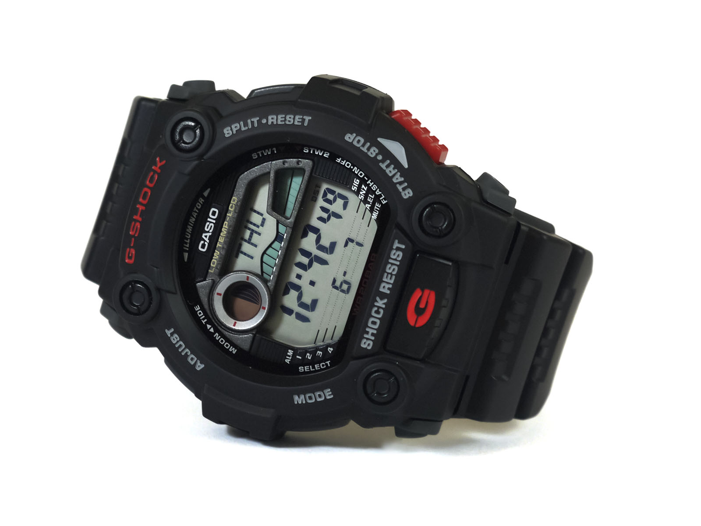

Cаsio G-7900-1 G-Shock
Компания Casio, пользуется заслуженным авторитетом среди потребителей часов. Японский производитель выпускает как высокотехнологичные модели из серии Pro Trek и G-Shock, так и повседневные недорогие и надежные часы Casio, которые пользуются чрезвычайной популярностью. В настоящее время производится несколько линеек часов, а именно: ProTrek, Edifice, G-Shock, Baby-G, Sheen, Oceanus, General Collection Множество моделей с водозащитой 100м и 200м, с защитой от ударов и электромагнитных излучений выпускаются фирмой. В 2016 году компания приступила к выпуску смарт-часов. История фирмы началась в далеком 1946 году. В 1974 были выпущены первые часы с вечным календарем.